Chapter 10 · Part 1 — This Age
Birds sang. The air soft and warm.
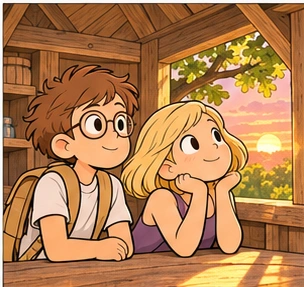
“I hope they find their ,” said Annie.
“Me too,” Jack. He pushed his glasses into place.
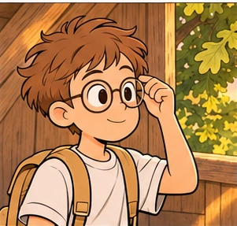
.
“Hey, you—how did you find the ?” Annie asked Peanut.
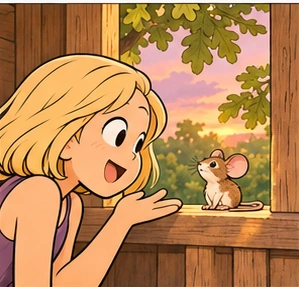
.
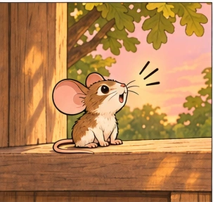
“It’s a secret, huh?” said Annie. She turned to Jack. “Where’s the ?”
He up the mammoth . Then he placed it on the M into the floor. Next to the mango from the rain forest. Next to the from the time of ninjas.
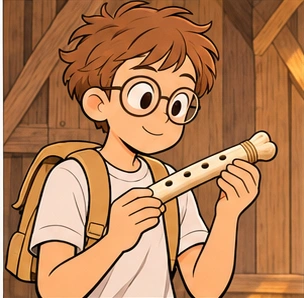
“, mango, mammoth bone … ” Annie said. “We need just one more M thing. Then Morgan will be free from her spell.”
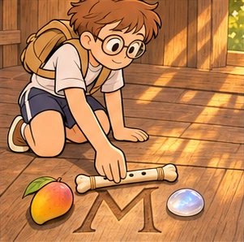
“Tomorrow,” Jack.
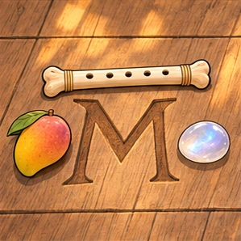
Annie Peanut on the head. “Bye, you,” she said.
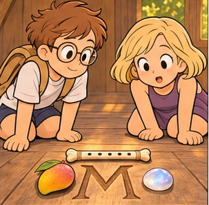
She started down the .
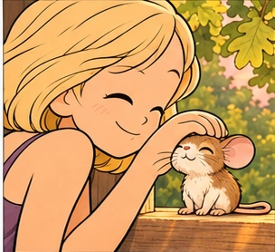
Jack his things.
He paused and glanced at the mouse. She at him with big brown eyes.
“ again for helping us,” he said.
Then he climbed down the rope and jumped onto the ground.
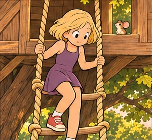
Jack and Annie through the Frog Creek woods onto their street.
Their neighborhood looked rosy in the .
It’s great to be in this age, Jack thought. Warm and safe and almost home.
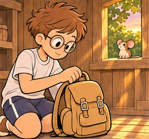
“I’m glad we don’t have to hunting for dinner,” he said.
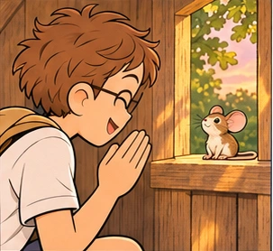
“Yeah, Mom and Dad already did that,” Annie, “at the supermarket.”
“I hope they trapped some spaghetti and meatballs,” Jack.
“I hope they trapped a pizza,” Annie.
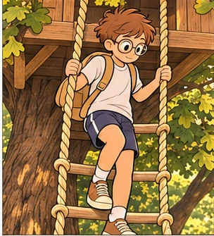
“, I’m starving,” said Jack.
They up their sidewalk and through their front door.
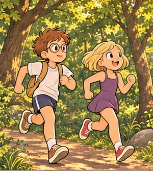
“We’re home!” Annie.
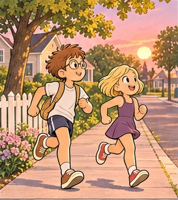
“What’s for dinner?” Jack.
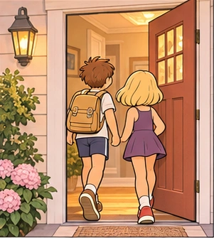